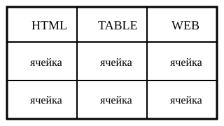

| Практическая работа №5 | Каракотов Р., ИП232 |
Составная таблица: изображение, списки, ссылка и объединение ячеек
 Графический пример | Итоговое задание Перейти к списку всех заданий |
Последовательность:
| Использованные элементы:
|
| Эта строка объединена по двум столбцам | |
| Одна область занимает две строки | Полужирный текст курсив подчёркивание |
| H2O x2 + y2 | |